12 slides.
One argument.
The campaign opens not with the product, but with a problem visualised. A chrome tap with a knot in its pipe — a single drop falling — is an instantly legible metaphor for obstructed urine flow. The visual makes the patient's discomfort tangible before a molecule is introduced. The CombAT study citation grounds the opening in clinical evidence immediately.

The product reveal slide introduces both molecules side-by-side with bold typographic hierarchy — DUTASTERIDE in red, TAMSULOSIN in navy — along with their mechanism classes and clinical outcomes. The "Delivers World Class European Quality" badge in the top-right corner signals manufacturing pedigree without requiring a dedicated slide.
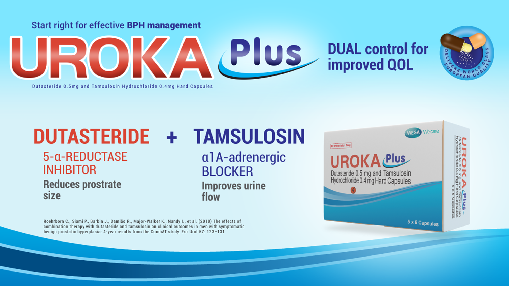
A photographed cross-section of the capsule reveals the engineering inside: a Dutasteride softgel capsule surrounded by Tamsulosin pellets, all within a hard outer shell. Three technical advantage tiles (gastroprotective layer, sub-1.4mm pellet size, soft-gel Dutasteride isolation) explain why this formulation outperforms dual-pill regimens on stability, side effects, and compliance.
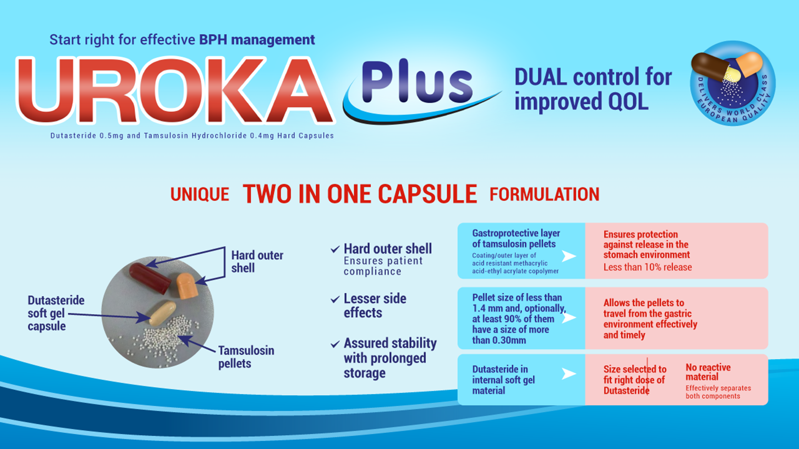
The Dutasteride MOA diagram shows testosterone being blocked at both Type 1 and Type 2 5-alpha reductase receptors simultaneously — preventing DHT conversion and resulting in prostate volume reduction. The key "Ideal Choice" benefits and clinical indications for enlarged prostate are listed alongside the anatomical pathway illustration.
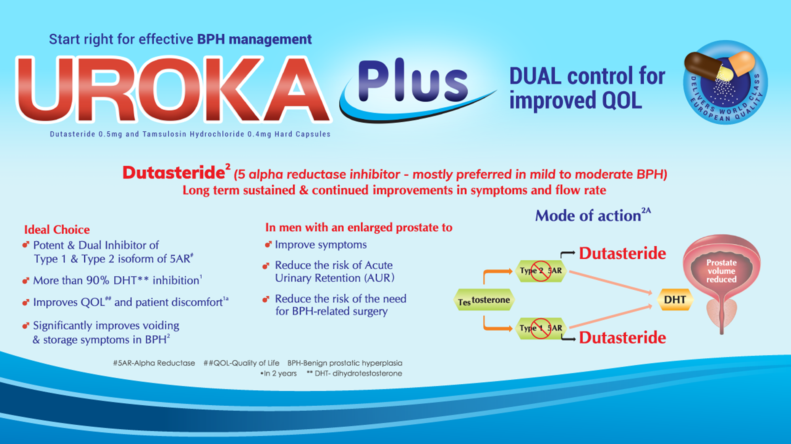
The bladder anatomy illustration demonstrates Tamsulosin's mechanism in two stages: tension in the constricted urethra above, then relaxation and improved flow below. Six clinical advantages — from rapid 1-week onset to 6-year safety data — are listed to address the prescriber's key concerns about alpha-blockers.
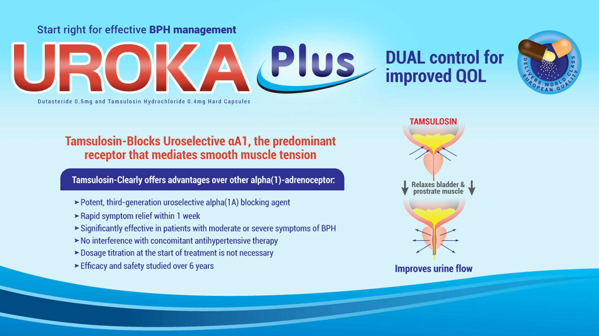
The synergy slide brings both MOA diagrams together, side-by-side — Dutasteride shrinking the prostate, Tamsulosin relaxing the muscle — with the combined clinical benefits of Uroka Plus listed: fast response under 2 weeks, 28% prostate size reduction, AUR risk reduction, 48% IPSS improvement, and Qmax increases of 1.2–4.0 ml/s. This is the "why both" argument delivered visually.
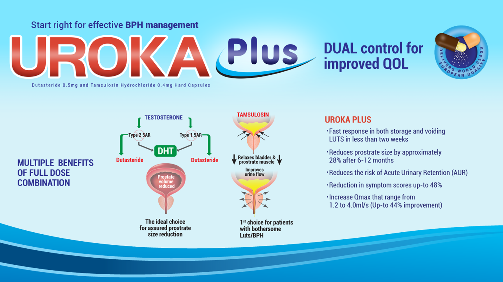
A clean hexagonal decision tree takes the prescriber from "BPH Patient" through IPSS scoring (≤7 vs >7), bothersome symptom severity, and prostate volume/PSA thresholds — to the appropriate therapy class. Where prostate ≥30ml and PSA ≥1.5ng/ml: 5-ARI, alpha blocker, or combination. This slide is designed to be used live in consultation as a shared decision-making tool.
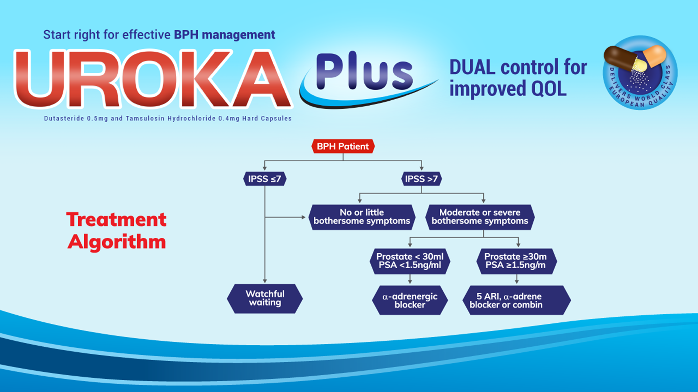
The early combination therapy evidence slide is the campaign's strongest prescribing argument: starting CT before 6 months reduces AUR/S risk 3-fold vs delayed CT, achieves ≥50% IPSS improvement in 60.8% of patients vs 50.5%, and delivers significantly higher responder rates. Source: World Journal of Urology (2021). The product box is prominent — this is the prescribing close.
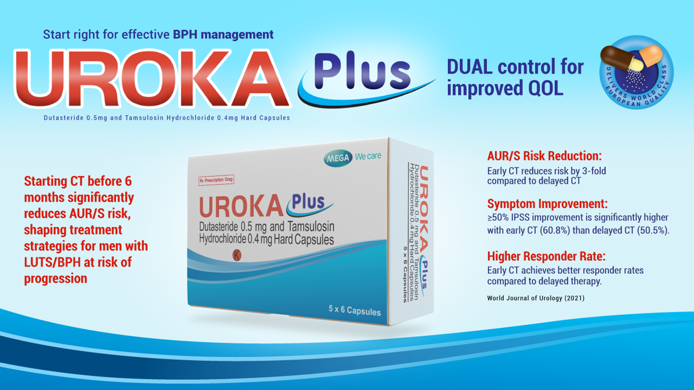
A character-driven comparison card — an animated illustration of a confident patient (early CT: 3× risk reduction) vs a worried patient (late CT: higher event incidence, symptom deterioration). The contrast is simple and emotionally direct, making the early treatment argument feel personally relevant to the doctor's patient sitting across the desk.
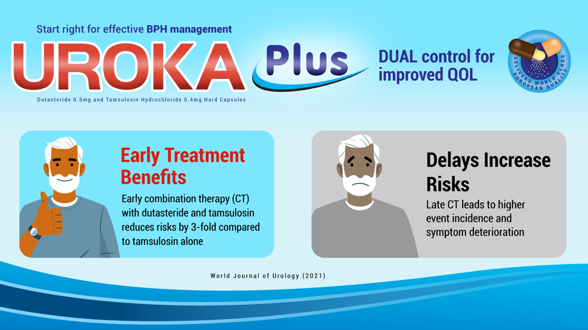
A structured comparative table sets Uroka Plus against monotherapy options across six clinical outcomes: prostate volume reduction, PV maintenance, symptom/flow improvement, speed of onset, halting progression, and AUR/surgery risk reduction. Uroka Plus is the only therapy to check all six boxes — the table is the visual argument for combination therapy superiority, laid out without bias.
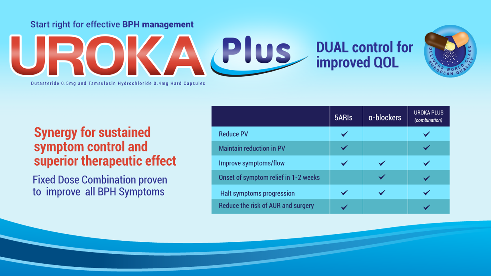
The CombAT study bar chart (BJU Int. 2011;107(9):1426–31) is the campaign's crown jewel evidence slide. Three grouped bar charts compare combination therapy, dutasteride alone, and tamsulosin alone across Total IPSS (−6.3 vs −5.3 vs −3.8), Storage sub-score (−2.3 vs −1.9 vs −1.4), and Voiding sub-score (−4.0 vs −3.5 vs −2.4). Combination wins every measure — the chart does the talking.
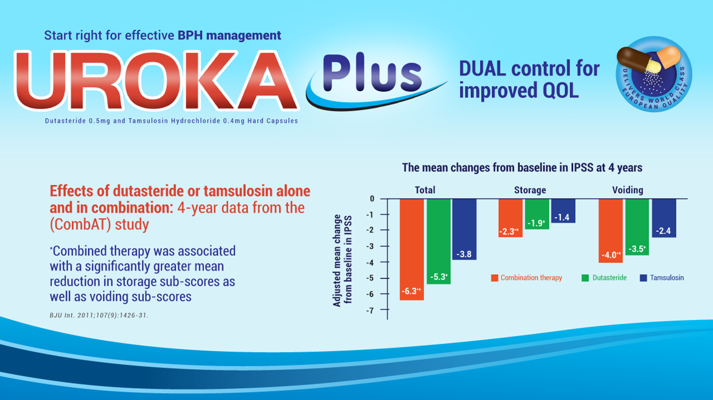
The campaign closes with an African doctor-patient image — two men, one younger and confident, one older and relieved — communicating quality of life restoration. The RX indications (moderate to severe BPH, AUR risk reduction) and dosage (one capsule daily) are stated plainly. The close is designed to leave the prescriber with a positive, human image and a clear action.
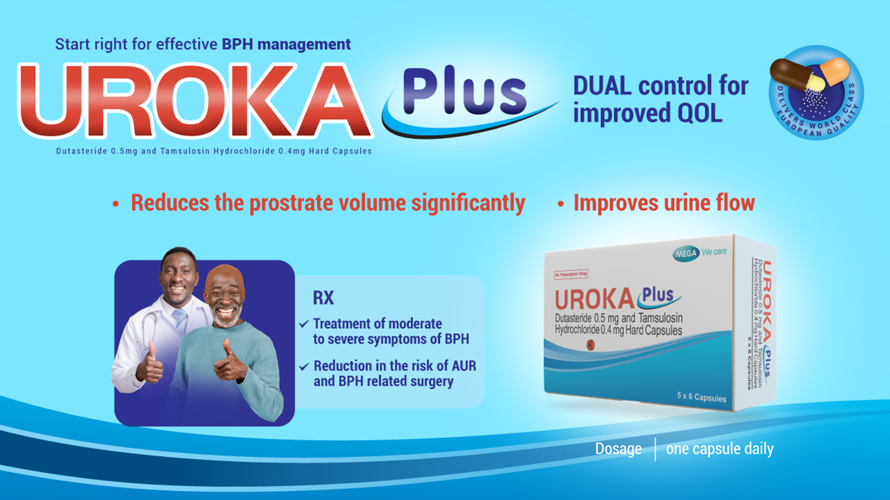